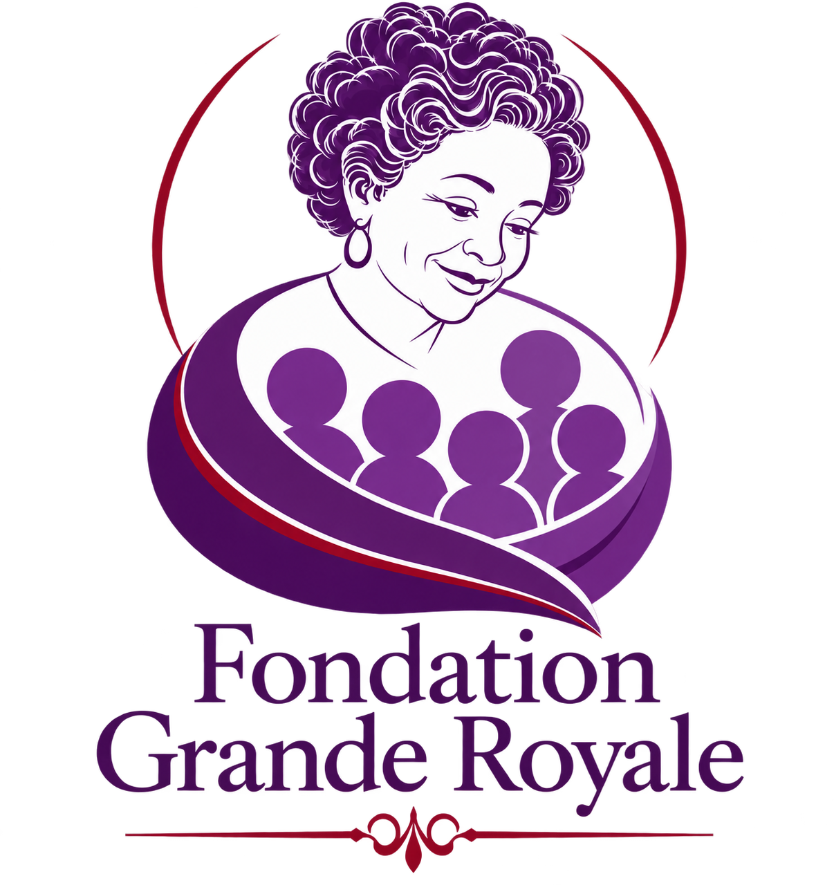

Supervisory Council
Provides oversight, approves programs, budgets and annual accounts.
Fondation Grande Royale is a Cameroonian nonprofit organization focused on vulnerable children, young mothers, elderly people and disadvantaged people.
FGR seeks to improve living conditions through education, health access, vocational training, protection, advocacy and community-based support.
FGR's stated vision is to provide an adequate living environment for people disadvantaged emotionally, materially, physically or educationally.

The name Grande Royale honors a grandmother remembered for loving people openly, helping everyone she could and treating generosity as a way of life.
FGR carries that spirit forward through organized, practical support for people who are too often overlooked.
The statutes establish a Supervisory Council, an Executive Board and provisions for audit oversight and annual financial reporting.
Provides oversight, approves programs, budgets and annual accounts.
Responsible for administration, programs, finance and project management.
An audit committee is provided for in the statutes to oversee proper use of managed funds.